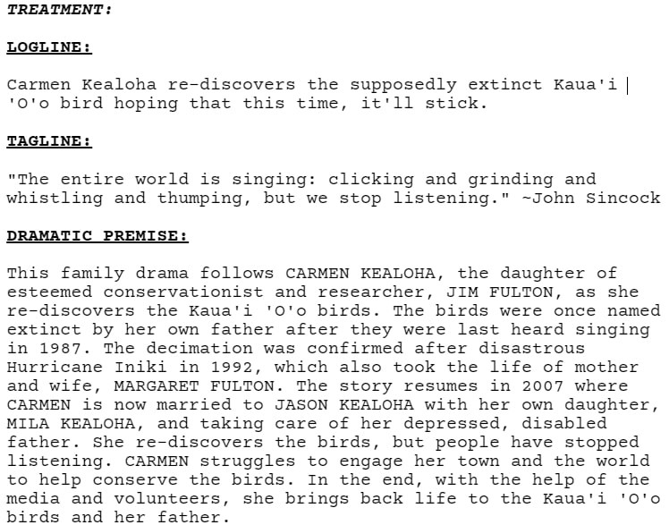
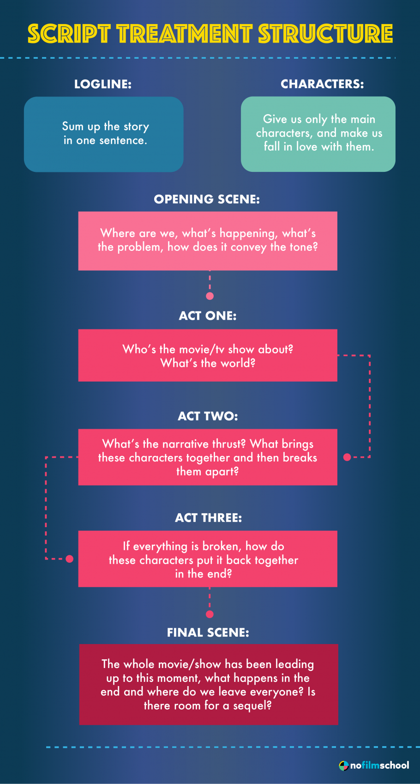

What's a story treatment?
A treatment is essentially a prose version of your screenplay, although its exact definition can vary from person to person. Usually, treatments differ from outlines in that they look more like short stories where outlines look more like breakdowns or bulleted lists, but this is a bit of a generalization. Most feature treatments are around 10-20 pages, but they can be longer or shorter depending on what the story demands. A story treatment is DIFFERENT from a Television Bible, and a story treatment can be made for a television show.
A basic story treatment has a title, log line, tag line, dramatic premise, character list, basic setting outline, and paragraph descriptions of what happens in the opening scene/sequence, act one, act two, and act three of the script. Read further to discover what each of these sections entail.
Requirements:
Title: Every good story needs a title. Even if you're not set on just one title, just pick one for the time being. It's harder to organize untitled files than it is to organize titles ones.
Log Line: Simply, it's a one-sentence summary of your story. Or, at least, the introduction to your movie.
Tag Line: Have you ever seen the captivating quote that appears on promotions, posters, trailers, etc? That's a tag line.
Dramatic Premise: Simply, it's a one-paragraph summary of your story. It should be about one-minute long. This is used in the creation of your pitch.
Character List: This is a list of your main characters. Each character should have a name, age at a certain point, any physical requirements, and a short description of their personality.
Setting: This is either a list of the main settings, or a paragraph description of the main settings. You can include images here. No need for specifics here. You can just say suburban house to envelope the smaller settings (ie. bedroom, kitchen, etc).
Paragraph Description vs. Step Outline: To describe the actual story plot (opening, acts, and final image), you can use paragraph descriptions, which is exactly as it sounds, or you can use a step outline, which is a simplified, less descriptive version of the paragraph option.
Opening: How does the story open? Is there a title sequence? What do we see? Is it a sequence or a full scene? How is it different from where we are in the acts?
Acts: Most films have three acts. Some have more, and some have less. Same goes for television episodes. You can see how they are divided in the image to the right.
Final Image: The final image is what sends us into the end credits. It is impactful and is directed/written very carefully. So, what is it?
Helpful Tools for your Treatment:
Here are some simple things you can do to finish your initial treatment.
- One-Word Summary: A one-word is exactly how it sounds. Some writers go as far to say that if you can't find one word to encompass your film, you shouldn't write it. Harsh, but helpful.
- Image Board: This is basically a mood board. Fill it with pictures of your setting. Maybe some actors/people who you envision playing your characters. Important objects, etc. Have fun with this section!
- Timeline: Yep, that's right, a timeline is very useful. To repeat, create an EXACT timeline for your story. In it, record every major time stamp (ie. character birthday, flashback dates, the days/months/years story is taking place, etc).
- Research: Do a lot of research regarding your film. Unless you're making your own universe, you'll probably be doing a lot of this. Make sure to be extensive and sensitive to your topic. You don't want to offend anyone with your story. Plus, research always helps you to explore new areas of your story, to make certain sections more cohesive, and somehow inspire you once more.
- Related Works: A film is a lot easier to write nowadays since so many already exist. The goal isn't to write something entirely new because you'll never be able to achieve that. All you can do is build onto what's already there. Sometimes the build is extreme, sometimes it's not. Find a movie/tv show that relates to your own. It'll help. Trust me.